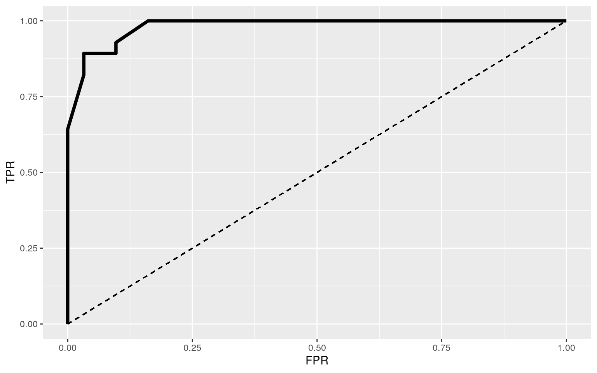

library(tidyr)
set.seed(348)
library(ggplot2)
library(sandwich)
library(lmtest)
library(tidyverse)
library(glmnet)
library(Matrix)
library(dbplyr)Shreya Singh (ss77555)
This dataset concerning lung cancer had 59 observations per 8 columns. The variables included Name, Surname, Age, number of smokes (Smokes), Area of cancer per cubic centimeter (AreaQ), number of alcoholic drinks (Alkhol), location of the patient to see if they lived in the city or a rural area (Loc), and whether the patient had cancer or not (Result). Overall the entire dataset was looking at the interplay between each of these variables, aside from Name and Surname, and the effect they had on contracting lung cancer.
lung_cancer_examples <- read.csv("~/lung_cancer_examples.csv")
lc <- lung_cancer_examples
location <- c("City", "City", "Rural", "Rural", "City", "Rural", "City", "Rural", "City", "City", "City", "Rural", "Rural", "Rural", "Rural", "Rural", "Rural", "City", "City", "Rural", "Rural", "Rural", "City", "City", "Rural", "City", "City", "City", "City", "City", "City", "City", "City", "City", "City", "City", "Rural", "Rural", "Rural", "City", "City", "Rural", "City", "Rural", "Rural", "Rural", "Rural", "Rural", "City", "City", "Rural", "City", "City", "Rural", "City", "Rural", "City", "Rural", "City")
lc_new <- lc %>% mutate(Loc = location)man1<-manova(cbind(Age,Smokes,AreaQ,Alkhol)~Loc, data=lc_new)
summary(man1)## Df Pillai approx F num Df den Df Pr(>F)
## Loc 1 0.050286 0.7148 4 54 0.5855
## Residuals 57A MANOVA test was performed to see whether any of the numeric variables of ‘Age’,‘Smokes’, ‘AreaQ’, and ‘Alkhol’ showed a mean difference across levels of the categorical variable of ‘Loc’ which told the location of the patient. According to the test which did not have a p-value of less than 0.05 so it failed to reject the null hypothesis, there weren’t any significant differences in the numerical variables that differed across the location. For the assumptions of MANOVA, since there are so many and difficult to test so it would be unlikely that all of them have been met. The samples were likely random and independent observations since this was recorded at a hospital according to however had been tested for cancer. It meets multivariate normality of DVs as it has more than 25 observations per each group. The assumption of omogeneity of within-group covariance matrices as it assumes it for each DV and equal covariance between any two DVs. Linear relationships among DVs seemed acceptable and there did not appear to be extreme univariate or multivariate outliers and no multicollinearity (i.e., DVs should not be too correlated) appeared to be met.
Count <- lc$Smokes+lc$Alkhol
lc%>%group_by(lc$Result)%>%summarize(means=mean(Count))%>%summarize(`mean_diff:`=diff(means))## # A tibble: 1 x 1
## `mean_diff:`
## <dbl>
## 1 0head(perm1<-data.frame(condition=lc$Result,Count=sample(Count)))## condition Count
## 1 1 23
## 2 1 21
## 3 0 11
## 4 0 29
## 5 1 25
## 6 0 12perm1%>%group_by(condition)%>% summarize(means=mean(Count))%>%summarize(`mean_diff:`=diff(means))## # A tibble: 1 x 1
## `mean_diff:`
## <dbl>
## 1 3.77mean(lc$Smokes)## [1] 15.0678mean(lc$Alkhol)## [1] 3.237288mean(lc$Smokes)-mean(lc$Alkhol)## [1] 11.83051Puffs <- c(lc$Smokes)
Liquor <- c(lc$Alkhol)
cancer <- data.frame(count = c(Puffs, Liquor), drug = c(rep("S", 59), rep("A", 59)))
rand_dist<-vector()
for(i in 1:5000){
new<-data.frame(count=sample(cancer$count),drug=cancer$drug)
rand_dist[i]<-new %>% group_by(drug) %>% summarize(means = mean(count)) %>% summarize(diff(means)) %>% pull}
wdiff <- cancer %>% group_by(drug) %>% summarize(means = mean(count)) %>% summarize(diff(means)) %>% pull
mean(rand_dist > abs(wdiff))*2## [1] 0{hist(rand_dist,main="",ylab=""); abline(v =11.831,col="red")}The null hypothesis would be the mean number of counts is the same for smoking and drinking. The alternative hypothesis would be that the mean number of counts is not the same for smoking and drinking. When utilizing the randomization test to scramble or randomize the relationship between variables in the sample to generate a null distribution against which to compare an observed test statistic, the randomized test showed a result of 0. This result would indicate that the null hypothesis would be rejected since 0 is less than the 0.05 and so the actual mean number of counts is not the same for smoking and drinking. A null distribution was performed to see the sampling distribution of the test statistic when the null hypothesis was true. THe graph shows the distribution of all mean differences on the scramble data so if there was no actual difference between the mean number of counts for smoking and drinking, this is the ditribution of mean differences we’d expect due to chance. What’s the porbabilty of getting a diff as big as 11 under random distribution under null is 1, can’t reject null.
lc$Result <- as.character(lc$Result)
lc$Result[lc$Result == "0"] <- "No"
lc$Result[lc$Result == "1"] <- "Yes"
data.frame(Age_c=lc_new$Age-mean(lc_new$Age))## Age_c
## 1 -7.6271186
## 2 -15.6271186
## 3 -12.6271186
## 4 -14.6271186
## 5 25.3728814
## 6 -8.6271186
## 7 15.3728814
## 8 -20.6271186
## 9 2.3728814
## 10 9.3728814
## 11 -9.6271186
## 12 -24.6271186
## 13 -17.6271186
## 14 -14.6271186
## 15 -8.6271186
## 16 -3.6271186
## 17 -0.6271186
## 18 -23.6271186
## 19 19.3728814
## 20 30.3728814
## 21 12.3728814
## 22 -9.6271186
## 23 -20.6271186
## 24 1.3728814
## 25 34.3728814
## 26 -21.6271186
## 27 -5.6271186
## 28 -8.6271186
## 29 12.3728814
## 30 -2.6271186
## 31 -6.6271186
## 32 13.3728814
## 33 4.3728814
## 34 19.3728814
## 35 -16.6271186
## 36 -17.6271186
## 37 16.3728814
## 38 19.3728814
## 39 -9.6271186
## 40 -5.6271186
## 41 7.3728814
## 42 4.3728814
## 43 26.3728814
## 44 20.3728814
## 45 -3.6271186
## 46 -21.6271186
## 47 -11.6271186
## 48 -14.6271186
## 49 10.3728814
## 50 19.3728814
## 51 -0.6271186
## 52 1.3728814
## 53 -16.6271186
## 54 -7.6271186
## 55 -16.6271186
## 56 34.3728814
## 57 32.3728814
## 58 0.3728814
## 59 8.3728814lc_new$Age_c <- lc_new$Age - mean(lc_new$Age)
fit<-lm(AreaQ ~ Loc*Age_c, data=lc_new)
summary(fit)##
## Call:
## lm(formula = AreaQ ~ Loc * Age_c, data = lc_new)
##
## Residuals:
## Min 1Q Median 3Q Max
## -4.538 -1.619 -0.164 1.714 5.551
##
## Coefficients:
## Estimate Std. Error t value Pr(>|t|)
## (Intercept) 4.97253 0.42877 11.597 <2e-16 ***
## LocRural 0.49066 0.63395 0.774 0.442
## Age_c -0.03404 0.02781 -1.224 0.226
## LocRural:Age_c -0.01133 0.03924 -0.289 0.774
## ---
## Signif. codes: 0 '***' 0.001 '**' 0.01 '*' 0.05 '.' 0.1
' ' 1
##
## Residual standard error: 2.42 on 55 degrees of freedom
## Multiple R-squared: 0.08375, Adjusted R-squared: 0.03377
## F-statistic: 1.676 on 3 and 55 DF, p-value: 0.1828ggplot(lc_new, aes(x = Age_c, y =AreaQ , color = Loc)) + geom_point() + stat_smooth(method = "lm", se = FALSE, fullrange = TRUE)resids<-fit$residuals; fitvals<-fit$fitted.values
ggplot()+geom_point(aes(fitvals,resids))+geom_hline(yintercept=0, col="red")bptest(fit)##
## studentized Breusch-Pagan test
##
## data: fit
## BP = 0.47076, df = 3, p-value = 0.9253ks.test(resids, "pnorm", mean=0, sd(resids)) ##
## One-sample Kolmogorov-Smirnov test
##
## data: resids
## D = 0.050859, p-value = 0.998
## alternative hypothesis: two-sidedshapiro.test(resids)##
## Shapiro-Wilk normality test
##
## data: resids
## W = 0.98422, p-value = 0.6403summary(fit)$coef[,1:2] #uncorrected SEs## Estimate Std. Error
## (Intercept) 4.97252663 0.42876605
## LocRural 0.49065955 0.63395128
## Age_c -0.03403514 0.02781267
## LocRural:Age_c -0.01132997 0.03924120coeftest(fit, vcov = vcovHC(fit))[,1:2] #corrected SE## Estimate Std. Error
## (Intercept) 4.97252663 0.45775623
## LocRural 0.49065955 0.64729531
## Age_c -0.03403514 0.02473327
## LocRural:Age_c -0.01132997 0.03549120(sum((lc_new$AreaQ-mean(lc_new$AreaQ))^2)-sum(fit$residuals^2))/sum((lc_new$AreaQ-mean(lc_new$AreaQ))^2)## [1] 0.08374764The results showed that location and age did not have a significant effect on the area of the disease. 0.49066 showed that when age was zero, people in rural location has an area that was 0.49066 higher than people in the city area. -0.03404 showed when location was 0, older individuals were more likely to get cancer. -0.01133 was the difference in slope of people between people who live in the rural or city area for the effect of aging on getting cancer so we cannot reject the null hypothesis that smoking has an effect on both the groups of aging and getting cancer.
One assumption for linear regression is linearity which was met since there were no curves on the scatterplot. The test for normality was done both by the Kolmogorov-Smirnov test and the Shapiro-Wilk normality test which had a null hypothesis that claimed that the true distribution is normal. Since both had p values that were greater than 0.05, we fail to reject the null hypothesis and therefore the the distribution is normal and the assumption of normality is met. Another assumption of Homoscedasticity, a bp test was perfomened that tested the null hypothesis that the data was homoscedasticity and has equal variance and since the p value was not less than 0.05 and was in fact 0.9253, the data failed to reject the null hypothesis and upheld homoscedasticity.
The original regression results showed the standard errors under the assumption that the null hypothesis was true. When the regression results were recomputed with robust standard errors via coeftest(…,vcov=vcovHC(…)), to acquire corrected standard errors robust to violations of homoskedasticity. The new results of the robust SE remained approximately the same.
The proportion of the variation in the outcome that was explained by your the model was 0.08374764.
coeftest(fit)[,1:2]## Normal-theory SEs## Estimate Std. Error
## (Intercept) 4.97252663 0.42876605
## LocRural 0.49065955 0.63395128
## Age_c -0.03403514 0.02781267
## LocRural:Age_c -0.01132997 0.03924120coeftest(fit, vcov=vcovHC(fit))[,1:2] ## Robust SEs## Estimate Std. Error
## (Intercept) 4.97252663 0.45775623
## LocRural 0.49065955 0.64729531
## Age_c -0.03403514 0.02473327
## LocRural:Age_c -0.01132997 0.03549120boot_dat<- sample_frac(lc_new, replace=T)
samp_distn<-replicate(5000, {
boot_dat <- sample_frac(lc_new, replace=T) #bootstrap your data
fit <- lm(AreaQ ~ Loc*Age_c, data=boot_dat) #fit model
coef(fit) #save coefs
})
samp_distn %>% t %>% as.data.frame %>% summarize_all(sd)## (Intercept) LocRural Age_c LocRural:Age_c
## 1 0.4518377 0.6364776 0.0251151 0.03527756samp_distn %>% t %>% as.data.frame %>% gather %>% group_by(key) %>% summarize(lower=quantile(value,.025), upper=quantile(value,.975))## # A tibble: 4 x 3
## key lower upper
## <chr> <dbl> <dbl>
## 1 (Intercept) 4.09 5.83
## 2 Age_c -0.0813 0.0191
## 3 LocRural -0.729 1.75
## 4 LocRural:Age_c -0.0852 0.0552fit<-lm(AreaQ ~ Loc*Age_c, data=lc_new)
resids<-fit$residuals
fitted<-fit$fitted.values
resid_resamp<-replicate(5000,{
new_resids<-sample(resids,replace=TRUE)
newdat<-lc_new
newdat$new_y<-fitted+new_resids
fit<-lm(new_y ~ Loc*Age_c, data = newdat)
coef(fit)
})
resid_resamp%>%t%>%as.data.frame%>%summarize_all(sd)## (Intercept) LocRural Age_c LocRural:Age_c
## 1 0.4104408 0.6145152 0.02678997 0.03817309resid_resamp%>%t%>%as.data.frame%>%gather%>%group_by(key)%>% summarize(lower=quantile(value,.025), upper=quantile(value,.975))## # A tibble: 4 x 3
## key lower upper
## <chr> <dbl> <dbl>
## 1 (Intercept) 4.15 5.78
## 2 Age_c -0.0864 0.0170
## 3 LocRural -0.700 1.74
## 4 LocRural:Age_c -0.0853 0.0656The bootstrapping showed that we’re 95% sure that the true intercept was between 4.08495305 and 5.82291651 while the estimate was 0.4391239. The same theory can be applied to thinking that the true location of being rural was between -0.079558916 and 1.71249059 (it was estimated to be 0.6243009), the true slope for age was between -0.07952698 and 0.01673242 (it was estimated to be 0.02464783), and the true interaction estimation between location and age was between -0.07915423 and 0.05369964 (it was estimate to be 0.03428608). The same theory applied when bootstrapping was done on the residuals. These values approximately matched the SE from the original and robust results.
lc_again<-lc%>%mutate(y=ifelse(Result=="Yes",1,0))
lc_again$Result <- as.numeric(lc_again$Result)
fit_log <- glm(y~Alkhol+Smokes, data = lc_again, family = binomial(link = logit))
coeftest(fit_log)##
## z test of coefficients:
##
## Estimate Std. Error z value Pr(>|z|)
## (Intercept) -9.039099 3.180996 -2.8416 0.004489 **
## Alkhol 3.022887 1.047269 2.8864 0.003896 **
## Smokes -0.027128 0.104011 -0.2608 0.794233
## ---
## Signif. codes: 0 '***' 0.001 '**' 0.01 '*' 0.05 '.' 0.1
' ' 1exp(coef(fit_log))## (Intercept) Alkhol Smokes
## 1.186777e-04 2.055054e+01 9.732367e-01logistic<-function(x){exp(x)/(1+exp(x))}
probs<-predict(fit_log,type="response") #get predicted probs from the model
table(predict=as.numeric(probs>.5),truth=lc_again$y)%>%addmargins## truth
## predict 0 1 Sum
## 0 30 4 34
## 1 1 24 25
## Sum 31 28 59odds <- function(p) p/(1 - p)
p <- seq(0, 1, by = 0.1)
cbind(p, odds = odds(p)) %>% round(4)## p odds
## [1,] 0.0 0.0000
## [2,] 0.1 0.1111
## [3,] 0.2 0.2500
## [4,] 0.3 0.4286
## [5,] 0.4 0.6667
## [6,] 0.5 1.0000
## [7,] 0.6 1.5000
## [8,] 0.7 2.3333
## [9,] 0.8 4.0000
## [10,] 0.9 9.0000
## [11,] 1.0 Inflogit <- function(p) log(odds(p))
lc_again$logit <- predict(fit_log)
lc_again$y <- factor(lc_again$y, levels = c(1, 0))
ggplot(lc_again, aes(logit, fill = y)) + geom_density(alpha = 0.4) + geom_vline(xintercept = 0, lty = 2)lc_again$prob <- predict(fit_log, type = "response")
lc_again$y <- as.factor(lc_again$y)
sens<-function(p,data=lc_again, y=y) mean(lc_again[lc_again$y==1,]$prob>p)
spec<-function(p,data=lc_again, y=y) mean(lc_again[lc_again$y==0,]$prob<p)
sensitivity<-sapply(seq(0,1,.01),sens,lc_again)
specificity<-sapply(seq(0,1,.01),spec,lc_again)
ROC1<-data.frame(sensitivity,specificity,cutoff=seq(0,1,.01))
ROC1%>%gather(key,rate,-cutoff)%>%ggplot(aes(cutoff,rate,color=key))+geom_path()+ geom_vline(xintercept=c(.1,.5,.9),lty=2,color="gray50")ROC1$TPR<-sensitivity
ROC1$FPR<-1-specificity
ROC1%>%ggplot(aes(FPR,TPR))+geom_path(size=1.5)+geom_segment(aes(x=0,y=0,xend=1,yend=1), lty=2)+scale_x_continuous(limits = c(0,1))
widths <- diff(ROC1$FPR)
heights <- vector()
for (i in 1:100) heights[i] <- ROC1$TPR[i] + ROC1$TPR[i + 1]
AUC <- sum(heights * widths/2)
AUC %>% round(4)## [1] -0.9821set.seed(1234)
k=10
lc_again$Result<-NULL #remove this variable for now
fit <- glm(y~Alkhol+Smokes,data=lc_again,family="binomial") #fit model
prob <- predict(fit,type="response") #get predicted probabilities
class_diag <- function(probs,truth){
#CONFUSION MATRIX: CALCULATE ACCURACY, TPR, TNR, PPV
tab<-table(factor(probs>.5,levels=c("FALSE","TRUE")),truth)
acc=sum(diag(tab))/sum(tab)
sens=tab[2,2]/colSums(tab)[2]
spec=tab[1,1]/colSums(tab)[1]
ppv=tab[2,2]/rowSums(tab)[2]
if(is.numeric(truth)==FALSE & is.logical(truth)==FALSE) truth<-as.numeric(truth)-1
#CALCULATE EXACT AUC
ord<-order(probs, decreasing=TRUE)
probs <- probs[ord]; truth <- truth[ord]
TPR=cumsum(truth)/max(1,sum(truth))
FPR=cumsum(!truth)/max(1,sum(!truth))
dup<-c(probs[-1]>=probs[-length(probs)], FALSE)
TPR<-c(0,TPR[!dup],1); FPR<-c(0,FPR[!dup],1)
n <- length(TPR)
auc<- sum( ((TPR[-1]+TPR[-n])/2) * (FPR[-1]-FPR[-n]) )
data.frame(acc,sens,spec,ppv,auc)
}
class_diag(prob, lc_again$y)## acc sens spec ppv auc
## 0 0.9152542 0.9677419 0.8571429 0.8823529 0.9821429library(pROC)
auc(lc_again$y,prob)## Area under the curve: 0.9821set.seed(1234)
k=10 #choose number of folds
data<-lc_again[sample(nrow(lc_again)),] #randomly order rows
folds<-cut(seq(1:nrow(lc_again)),breaks=k,labels=F) #create folds
diags<-NULL
for(i in 1:k){
## Create training and test sets
train<-data[folds!=i,]
test<-data[folds==i,]
truth<-test$y ## Truth labels for fold i
## Train model on training set (all but fold i)
fit<-glm(y~Alkhol+Smokes,data=train,family="binomial")
## Test model on test set (fold i)
probs<-predict(fit,newdata = test,type="response")
## Get diagnostics for fold i
diags<-rbind(diags,class_diag(probs,truth))
}
summarize_all(diags,mean)## acc sens spec ppv auc
## 1 0.8833333 0.875 0.86 NaN 0.98125apply(diags,2,mean)## acc sens spec ppv auc
## 0.8833333 0.8750000 0.8600000 NaN 0.9812500Drinking alcohol have a significant effect on the probablitly that someone would develope cancer will smoking did not since the p value of smoking is not less than 0.05. We expect the log-odds of developing cancer to go up by 3.022887 for every one unit increase in drinking. The probability that someone had cancer when they had a smoke or drink count to the power of 0 would be -9.039099.
Sensitivity was the true positive rate (TPR) which in this case is the probability of detecting how many people really had lung cancer which was 24/28 = 0.8571. Specificity was the true negative rate (TNR) which is the probability of a negative test for healthy people which was 30/31 = 0.9677. Precision (PPV) was the proportion classified malignant who actually were which was 24/25 = 0.96.
Given the AUC of -0.9821, so probabilty someone with cancer has a -0.9821 chance of having a higher probabilty than someone without cancer. Overall the score was quite low and the AUC would be considered bad.
In the denist yplot, logit > 0 meant we predict malignant red to the right: TP; blue to the right, FP. If logit < 0, it meant we predict benign blue to the right: TN; red to the right, FN.
lc$Result[lc$Result == "No"] <- "0"
lc$Result[lc$Result == "Yes"] <- "1"
lc$Result <- as.numeric(lc$Result)y<-as.matrix(lc$Result) #grab response
x<-model.matrix(Result~., data=lc)[,-1] #grab predictors
head(x)## NameAlex NameAnna NameBarbra NameBarbra NameCamela
NameCharlize NameCharlton NameCristiano
## 1 0 0 0 0 0 0 0 0
## 2 0 0 0 0 0 0 0 0
## 3 0 0 0 0 1 0 0 0
## 4 1 0 0 0 0 0 0 0
## 5 0 0 0 0 0 0 0 0
## 6 0 0 0 0 0 0 0 1
## NameDiane NameDiego NameDustin NameEllen NameErnest
NameFaye NameFredric NameGene
## 1 0 0 0 0 0 0 0 0
## 2 0 0 0 0 0 0 0 0
## 3 0 0 0 0 0 0 0 0
## 4 0 0 0 0 0 0 0 0
## 5 0 1 0 0 0 0 0 0
## 6 0 0 0 0 0 0 0 0
## NameGlenda NameGregory NameGwyneth NameHalle NameHenry
NameJack NameJane NameJane
## 1 0 0 0 0 0 0 0 0
## 2 0 0 0 0 0 0 0 0
## 3 0 0 0 0 0 0 0 0
## 4 0 0 0 0 0 0 0 0
## 5 0 0 0 0 0 0 0 0
## 6 0 0 0 0 0 0 0 0
## NameJessica NameJoan NameJohn NameJohn NameKatharine
NameKathy NameLee NameMaggie
## 1 0 0 1 0 0 0 0 0
## 2 0 0 1 0 0 0 0 0
## 3 0 0 0 0 0 0 0 0
## 4 0 0 0 0 0 0 0 0
## 5 0 0 0 0 0 0 0 0
## 6 0 0 0 0 0 0 0 0
## NameMarlon NameMaximilian NameMihail NameNicole
NameNicole NamePaul NamePeter NameRay
## 1 0 0 0 0 0 0 0 0
## 2 0 0 0 0 0 0 0 0
## 3 0 0 0 0 0 0 0 0
## 4 0 0 0 0 0 0 0 0
## 5 0 0 0 0 0 0 0 0
## 6 0 0 0 0 0 0 0 0
## NameRex NameRichard NameRobert NameRod NameSally
NameSidney NameSissy NameYul SurnameBates
## 1 0 0 0 0 0 0 0 0 0
## 2 0 0 0 0 0 0 0 0 0
## 3 0 0 0 0 0 0 0 0 0
## 4 0 0 0 0 0 0 0 0 0
## 5 0 0 0 0 0 0 0 0 0
## 6 0 0 0 0 0 0 0 0 0
## SurnameBerry SurnameBorgnine SurnameBrando
SurnameBrynner SurnameBurstyn SurnameConstantine
## 1 0 0 0 0 0 0
## 2 0 0 0 0 0 1
## 3 0 0 0 0 0 0
## 4 0 0 0 0 0 0
## 5 0 0 0 0 0 0
## 6 0 0 0 0 0 0
## SurnameCrawford SurnameDreyfuss SurnameDunaway
SurnameDuvall SurnameField SurnameFinch
## 1 0 0 0 0 0 0
## 2 0 0 0 0 0 0
## 3 0 0 0 0 0 0
## 4 0 0 0 0 0 0
## 5 0 0 0 0 0 0
## 6 0 0 0 0 0 0
## SurnameFonda SurnameGuinness SurnameHackman
SurnameHarrison SurnameHenry SurnameHepburn
## 1 0 0 0 0 0 0
## 2 0 0 0 0 0 0
## 3 0 0 0 0 0 0
## 4 0 0 0 0 0 0
## 5 0 0 0 0 0 0
## 6 0 0 0 0 0 0
## SurnameHeston SurnameHoffman SurnameJackson
SurnameKeaton SurnameKidman SurnameLange
## 1 0 0 0 0 0 0
## 2 0 0 0 0 0 0
## 3 0 0 0 0 0 0
## 4 0 0 0 0 0 0
## 5 0 0 0 0 0 0
## 6 0 0 0 0 0 0
## SurnameLemmon SurnameMagnani SurnameMaradona
SurnameMarch SurnameMarvin SurnameMilland
## 1 0 0 0 0 0 0
## 2 0 0 0 0 0 0
## 3 0 0 0 0 0 0
## 4 0 0 0 0 0 0
## 5 0 0 1 0 0 0
## 6 0 0 0 0 0 0
## SurnameNicholson SurnamePaltrow SurnamePeck
SurnamePoitier SurnameRonaldo SurnameSchell
## 1 0 0 0 0 0 0
## 2 0 0 0 0 0 0
## 3 0 0 0 0 0 0
## 4 0 0 0 0 0 0
## 5 0 0 0 0 0 0
## 6 0 0 0 0 1 0
## SurnameScofield SurnameSmith SurnameSpacek
SurnameSteiger SurnameStreisand SurnameTal
## 1 0 0 0 0 0 0
## 2 0 0 0 0 0 0
## 3 0 0 0 0 0 0
## 4 0 0 0 0 0 0
## 5 0 0 0 0 0 0
## 6 0 0 0 0 0 0
## SurnameTelles SurnameTheron SurnameWayne SurnameWick
SurnameWyman Age Smokes AreaQ Alkhol
## 1 0 0 0 1 0 35 3 5 4
## 2 0 0 0 0 0 27 20 2 5
## 3 0 0 0 0 0 30 0 5 2
## 4 1 0 0 0 0 28 0 8 1
## 5 0 0 0 0 0 68 4 5 6
## 6 0 0 0 0 0 34 0 10 0cv<-cv.glmnet(x,y,family="binomial")
lasso<-glmnet(x,y,family="binomial",lambda=cv$lambda.1se)
coef(lasso)## 101 x 1 sparse Matrix of class "dgCMatrix"
## s0
## (Intercept) -5.994242592
## NameAlex .
## NameAnna .
## NameBarbra .
## NameBarbra .
## NameCamela .
## NameCharlize 2.043708970
## NameCharlton .
## NameCristiano .
## NameDiane .
## NameDiego .
## NameDustin .
## NameEllen .
## NameErnest .
## NameFaye -1.088280021
## NameFredric .
## NameGene .
## NameGlenda .
## NameGregory .
## NameGwyneth .
## NameHalle .
## NameHenry .
## NameJack .
## NameJane .
## NameJane .
## NameJessica .
## NameJoan .
## NameJohn 2.100887223
## NameJohn .
## NameKatharine .
## NameKathy .
## NameLee .
## NameMaggie .
## NameMarlon -0.116354783
## NameMaximilian .
## NameMihail .
## NameNicole .
## NameNicole .
## NamePaul .
## NamePeter .
## NameRay .
## NameRex .
## NameRichard .
## NameRobert .
## NameRod .
## NameSally .
## NameSidney .
## NameSissy .
## NameYul .
## SurnameBates .
## SurnameBerry .
## SurnameBorgnine .
## SurnameBrando -0.001456986
## SurnameBrynner .
## SurnameBurstyn .
## SurnameConstantine .
## SurnameCrawford .
## SurnameDreyfuss .
## SurnameDunaway -0.180377411
## SurnameDuvall .
## SurnameField .
## SurnameFinch .
## SurnameFonda .
## SurnameGuinness .
## SurnameHackman .
## SurnameHarrison .
## SurnameHenry .
## SurnameHepburn .
## SurnameHeston .
## SurnameHoffman .
## SurnameJackson .
## SurnameKeaton .
## SurnameKidman .
## SurnameLange .
## SurnameLemmon 0.005708238
## SurnameMagnani .
## SurnameMaradona .
## SurnameMarch .
## SurnameMarvin .
## SurnameMilland .
## SurnameNicholson .
## SurnamePaltrow .
## SurnamePeck .
## SurnamePoitier .
## SurnameRonaldo .
## SurnameSchell .
## SurnameScofield .
## SurnameSmith .
## SurnameSpacek .
## SurnameSteiger .
## SurnameStreisand .
## SurnameTal .
## SurnameTelles .
## SurnameTheron 0.258223396
## SurnameWayne .
## SurnameWick 0.909869647
## SurnameWyman .
## Age 0.131262511
## Smokes .
## AreaQ -0.634313144
## Alkhol 1.019805282set.seed(1234)
k=10
data <- lc %>% sample_frac #put rows of dataset in random order
folds <- ntile(1:nrow(data),n=10) #create fold labels
diags<-NULL
for(i in 1:k){
train <- data[folds!=i,] #create training set (all but fold i)
test <- data[folds==i,] #create test set (just fold i)
truth <- test$Result #save truth labels from fold i
fit <- glm(Result~Age+Smokes+Alkhol+AreaQ,data=train, family="binomial")
probs <- predict(fit, newdata=test, type="response")
diags<-rbind(diags,class_diag(probs,truth))
}
diags%>%summarize_all(mean)## acc sens spec ppv auc
## 1 0.95 0.9 0.95 0.98 0.9375This model’s out-of-sample accuracy of 0.9375 was close to rthe auc of logistic regression in part 5 which was 0.9812500. Given these results, the 0.98 was more accurate. Ignoring the names which had no real life effect on cancer, alkhol appeared to be an important predictor of cancer. Age and AreaQ were retained as well.
…